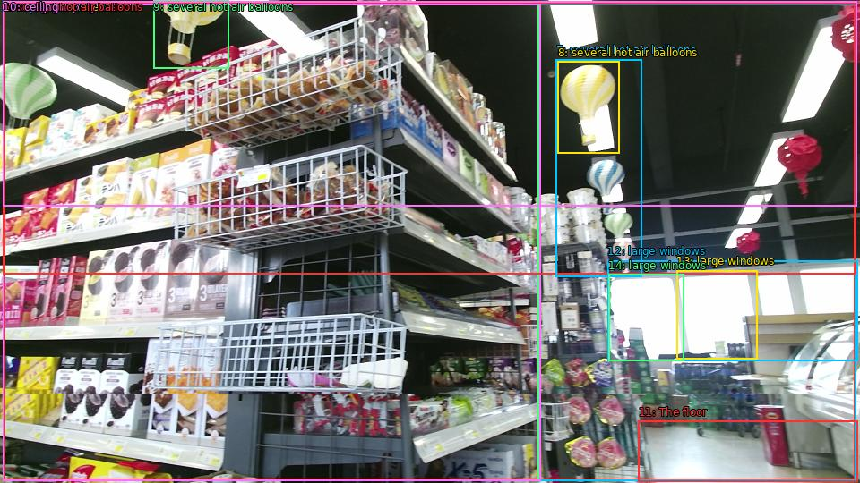

The image shows the interior of a supermarket aisle with multiple shelves stocked with various food items. The shelves are arranged in a grid-like pattern and are filled with different types of snacks and drinks. On the left side of the image, there is a large display case filled with a variety of snacks, including chips, crackers, and other snacks. In the background, there are several hot air balloons hanging from the ceiling, adding a festive touch to the space. The floor is tiled and there are large windows on the right side, allowing natural light to enter the store.

Original · Caption raw · Grounding raw · Koordinate
Številke so lokalni ID regije. Dolge slikovne oznake so skrajšane; spodaj so celotne fraze. Napovedane regije se lahko prekrivajo ali opisujejo skupine.
| ID | Celotna fraza | bbox xyxy |
|---|---|---|
| 1 | interior | [4.319999694824219, 4.050000190734863, 954.719970703125, 536.4900512695312] |
| 2 | supermarket aisle | [3.359999895095825, 3.510000228881836, 955.6799926757812, 537.030029296875] |
| 3 | multiple shelves | [3.359999895095825, 4.590000152587891, 601.4400024414062, 537.030029296875] |
| 4 | The shelves | [3.359999895095825, 4.050000190734863, 601.4400024414062, 537.030029296875] |
| 5 | a large display case | [3.359999895095825, 4.590000152587891, 603.3599853515625, 537.030029296875] |
| 6 | several hot air balloons | [3.359999895095825, 2.430000066757202, 955.6799926757812, 306.45001220703125] |
| 7 | several hot air balloons | [620.6400146484375, 66.1500015258789, 716.6399536132812, 309.1500244140625] |
| 8 | several hot air balloons | [622.5599975585938, 68.85000610351562, 691.6799926757812, 171.99000549316406] |
| 9 | several hot air balloons | [171.36000061035156, 0.8100000619888306, 255.83999633789062, 76.41000366210938] |
| 10 | ceiling | [3.359999895095825, 1.8900001049041748, 956.6399536132812, 230.3100128173828] |
| 11 | The floor | [712.7999877929688, 470.6100158691406, 957.5999755859375, 538.1100463867188] |
| 12 | large windows | [678.239990234375, 291.33001708984375, 957.5999755859375, 403.1100158691406] |
| 13 | large windows | [755.0399780273438, 302.1300048828125, 845.2799682617188, 401.4900207519531] |
| 14 | large windows | [679.2000122070312, 306.9900207519531, 763.6799926757812, 403.6500244140625] |